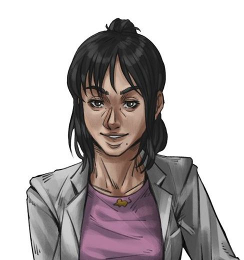

Ordem Paranormal
Ordem Paranormal é uma websérie brasileira criada pelo streamer Rafael "Cellbit" Lange e
dirigida por Júlio Taubkin, na qual uma equipe de influenciadores jogam RPG de mesa.
O show começou a ser
transmitido em 29 de fevereiro de 2020 pelo canal da Twitch de Cellbit.
Principais personagens interpretados por Gabi Cattuzzo
Elizabeth Webber

Personagem participante das temporadas :
"A Ordem Paranormal"; "O Segredo na Floresta"; "Ordem Paranormal: Desconjuração".
Elizabeth era uma mulher esguia, de 1,70 metros de altura, cabelos negros e tinha 28 anos de idade quando ingressou na Ordo Realitas.
Além de investigadora paranormal, ela era cientista forense. Liz tendia a ser rude e fria com todos, obcecada com suas teorias, e contando apenas com seus amigos mais próximos.
Ela tinha um notório problema com alcoolismo.
Carina Leone

Personagem participante das temporadas :
"Ordem Paranormal: Calamidade"
Carina Leone é uma mulher alta de pele clara e aspecto juvenil possuindo olhos verdes e cabelos castanhos, com mechas tingidas em ciano.
Dispondo diversas tatuagens espalhadas por seu corpo, entre elas um filtro dos sonhos e diversas flores em seus braços, um rato perto de
sua mão esquerda e um enorme dragão em suas costas. Carina usa uma calça escura com correntes penduradas, além de uma camisa preta de
gola alta. Calçando suas botas altas assemelhando-se a um coturno, além de uma jaqueta de couro cinzenta e um pingente em forma da cabeça
de um leão, o brasão da família Leone.
Bárbara Lima

Personagem participante das temporadas :
"O Segredo na Ilha"
Bárbara era uma mulher de pele clara com cabelos loiros medianos, que ultrapassavam seus ombros, com olhos escuros e sardas e
queimaduras de sol em suas bochechas e nariz. Ela usava um longo vestido marrom e branco, com detalhes de flores na parte de baixo,
juntamente com uma cinta preta, ela também vestia uma espécie de capa esverdeada presa por um cordão.